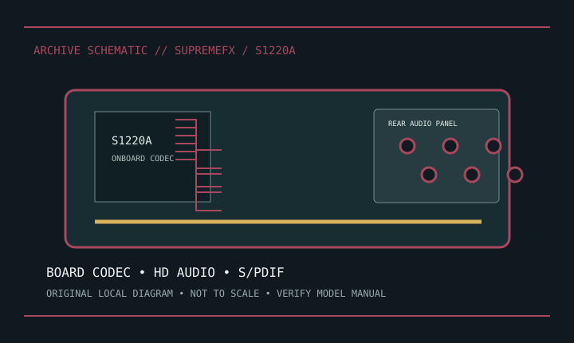

[ INDIVIDUAL COMPONENT // SOUND HARDWARE ]
ASUS ROG Strix Z390-E Gaming — SupremeFX S1220A onboard audio
This is the onboard audio implementation on ASUS ROG Strix Z390-E Gaming, not a standalone card. ASUS specifies SupremeFX S1220A; its analog stage and shielding are motherboard-specific.

Model-specific specifications
| Product/host | ASUS ROG Strix Z390-E Gaming onboard audio, marketed as SupremeFX S1220A. |
|---|---|
| Attachment | Soldered motherboard codec path, not a replaceable expansion card. |
| I/O | Rear multichannel analog jacks, optical S/PDIF and front-panel HD Audio header; follow board manual for jack mapping. |
| Codec/conversion | ASUS specifies S1220A and rates this implementation up to 120 dB SNR line-out and 113 dB line-in. These are ASUS board-level figures. |
| Features | ASUS documents shielding/isolation, jack sensing and bundled audio software; effects depend on driver/OS. |
| Drivers | Use board-specific ROG Strix Z390-E support downloads and select correct OS/revision. |
| Phantom | No XLR microphone preamp or 48 V phantom supply on onboard jacks. |
Compatibility & preservation
Keep board manual, driver and original rear-I/O map together. Codec alone does not define shielding, analog stage or jack switching. Photograph PCB revision and check HD Audio front-panel pinout before service.
- Photograph the model/revision label, connector panel, and installed/bundled accessories before service.
- Retain manufacturer manuals, original driver/firmware packages, and known-working configuration notes with the hardware.
- Use the specified signal level, connector wiring, and power requirements; connector fit alone does not prove compatibility.
Manufacturer sources
- ASUS ROG — ROG Strix Z390-E Gaming specsManufacturer specification for the SupremeFX implementation.
- ASUS Support — ROG Strix Z390-EManufacturer board manual and OS-specific driver downloads.